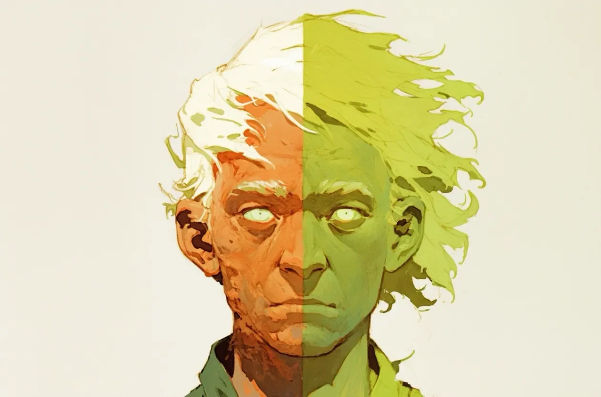

금이 간 도자기는 금이 간 인생을 비추고 있었다. 욕실 거울에 비친 얼굴의 절반은 지독한 피로의 지도였으며, 말라버린 강바닥과 햇볕에 구워져 붉어진 진흙의 풍경이었다. 그것은 마치 빗속에 방치되었다가 오븐에서 말려진 낡은 부츠처럼 보였다. 하지만 나머지 절반은 네온빛 악몽이었다. 어두운 레이브 파티장에서 꺾어버린 야광봉처럼 병적이고 초록빛이 도는 형광색을 뿜어냈고, 머리카락은 콘센트에 꽂힌 듯 곤두서 있었으며, 눈은 광기로 번들거렸다.
[Cracked porcelain reflected a cracked life. Half the face in the bathroom mirror was a roadmap of exhaustion, a landscape of dried riverbeds and ruddy, sun-baked clay. It looked like an old boot left out in the rain and then dried in an oven. The other half, however, was a neon nightmare. It glowed with the sickly, verdant luminescence of a glow stick snapped in a dark rave, the hair standing on end as if plugged into a socket, the eye wide and manic.]
오티스 워크로츠는 그저 자신의 고된 일상(Grind)과 흥겨운 리듬(Groove)을 분리하고 싶었을 뿐이었다. 그는 기술적으로는 존재하지 않는 서버에서 3비트코인을 주고 “양당의 영혼(The Bipartisan Soul)”이라는 주문을 구매했었다. 사용 설명서는 엄격한 구획화를 약속했다. 스프레드시트를 위한 진지한 남자와 주말을 위한 파티광으로의 완벽한 분리를 말이다.
[Otis Worklots had only wanted to separate his grind from his groove. He had bought the incantation, “The Bipartisan Soul,” for three Bitcoin on a server that didn’t technically exist. The instructions promised strict compartmentalization: a serious man for the spreadsheets, a party animal for the weekends.]
그는 그 두 자아가 동시에 자신의 두개골에 대한 공동 양육권을 행사하려 들 줄은 예상치 못했다.
[He didn’t expect them to share the custody of his skull at the same time.]
다른 방에 있는 노트북에서 울린 알림음이 분기 예산 검토의 시작을 알렸다.
[A chime from the laptop in the other room signaled the start of the quarterly budget review.]
“오, 맙소사.” 입의 왼쪽이 사포처럼 바싹 마른 목소리로 쉰 소리를 냈다. “한바탕 놀아보자고!” 입의 오른쪽이 신디사이저처럼 울리는 축축한 목소리로 비명을 지르듯 외쳤다.
[”Oh, god,” the left side of his mouth croaked, the voice dry as sand paper. “Let’s boogie!” the right side shrieked, the voice wet and reverberating like a synthesizer.]
오티스는 초록빛으로 빛나는 턱의 반쪽을 손으로 꽉 눌렀다. 뜨거운 열기가 느껴졌고 방사능 에너지로 웅웅거리고 있었다. 그는 책상으로 몸을 끌고 가서 웹캠을 기울여 그의 “멀쩡한” 쪽인 시들고 붉게 달아오른, 과로에 찌든 껍데기만 비추도록 했다. 추한 몰골이었지만 프로페셔널해 보였다. 진지하고, 내면이 죽어있는 모습. 회사 생활에 완벽했다.
[Otis clamped a hand over the glowing green half of his jaw. It felt hot, humming with radioactive energy. He dragged himself to the desk, tilting the webcam so it only caught his “good” side—the withered, red, overworked husk. It was ugly, but it looked professional. Serious. Dead inside. Perfect for corporate.]
“좋은 아침입니다, 팀원 여러분.” 오티스는 고개를 왼쪽으로 뻣뻣하게 고정한 채 말했다.
[”Morning, team,” Otis said, keeping his head rigidly turned to the left.]
“오티스,” 매니저의 목소리가 스피커를 통해 지직거렸다. “자네 목소리가 좀... 갈라진 것 같군. 3분기 예상 실적은 문제없는 건가?”
[”Otis,” the manager’s voice crackled through the speakers. “You sound... divided. Everything okay with the Q3 projections?”]
“수치는 확실합니다.” 붉은 입술이 웅얼거렸다.
[”The numbers are solid,” the red lip mumbled.]
갑자기 초록색 눈이 씰룩거렸다. 순수하고 섞이지 않은 혼돈의 에너지의 경련이 척추를 타고 내려갔다. 빛을 내며 떨리던 오른손이 솟구쳐 올라 웹캠을 향해 엄지를 치켜세우려 했다. 오티스는 죽어있는 붉은 왼손을 사용해 빛나는 초록색 손을 책상 아래로 억눌러 내렸다. 마치 장어와 씨름하는 것 같았다.
[Suddenly, the green eye twitched. A spasm of pure, unadulterated chaotic energy shot down his spine. The right hand, glowing and trembling, shot up and tried to give the webcam a thumbs-up. Otis used his dead, red left hand to wrestle the glowing green hand down to the desk. It was like wrestling an eel.]
“자네... 춤추고 있는 건가, 오티스?” 매니저가 물었다.
[”Are you... dancing, Otis?” the manager asked.]
“그저... 스트레칭 중입니다.” 오티스가 끙 앓는 소리를 냈다.
[”Just... stretching,” Otis grunted.]
머릿속의 압력이 차오르고 있었다. 그것은 단순한 두통이 아니었다. 지각 변동이었다. 콧등 중앙을 가로지르는 선, 즉 불에 탄 오렌지색 피부와 방사능 라임색 살점 사이의 비무장지대가 미친 듯이 가렵기 시작했다.
[The pressure inside his head was building. It wasn’t just a headache; it was a tectonic shift. The line down the center of his nose, the demilitarized zone between the burnt orange skin and the radioactive lime flesh, began to itch furiously.]
“우린 경상비에 대해 논의해야 하네.” 매니저가 단조로운 목소리로 말했다.
[”We need to discuss the overhead,” the manager droned.]
초록색 쪽은 견딜 수가 없었다. 그것은 순수한 충동이자 순수한 ‘현재’였으며, 경상비 따위는 질색이었다. 그것은 시끄러운 음악을 원했다. 번쩍이는 조명을 원했다. 비명을 지르고 싶었다.
[The green side couldn’t take it. It was pure impulse, pure “now,” and it hated the overhead. It wanted loud music. It wanted strobe lights. It wanted to scream.]
“지루해!” 초록색 반쪽이 목 근육의 통제권을 비틀어 빼앗으며 포효했다.
[”Boring!” the green half roared, wrenching control of the neck muscles.]
오티스의 고개가 카메라 쪽으로 홱 돌아갔고, 끔찍한 전모가 드러났다. 화면은 그 분열된 모습을 비췄다. 왼쪽은 시체처럼 위축된 모습이었고, 오른쪽은 광기 어린 생체 발광을 내뿜는 악귀였다.
[Otis’s head snapped toward the camera, revealing the full horror. The screen illuminated the split: the corpse-like atrophy on the left, the manic, bioluminescent ghoul on the right.]
“저건 도대체 무슨 인사 규정 위반 상황이지?” 누군가 통화 중에 속삭였다.
[”What in the HR violation is that?” someone whispered on the call.]
오티스는 사과하려 했지만, 입 밖으로 나온 건 축축하게 뭔가 찢어지는 소리뿐이었다. 코의 가려움은 마치 위시본이 부러지는 듯한 날카로운 파열음으로 변했다. 이마에 검은 균열이 벌어졌다.
[Otis tried to apologize, but the sound that came out was a wet tearing noise. The itch on his nose turned into a sharp snap, like a wishbone breaking. A dark fissure opened on his forehead.]
“제 생각엔,” 오티스가 두 눈을 가운데로 모아 자신의 콧등을 바라보며 끓는 소리를 냈다. “저... 끊어지고 있는 것 같습니다.”
[”I think,” Otis gurgled, both eyes crossing to look at the bridge of his own nose, “I’m breaking up.”]
이음매가 지퍼처럼 열렸다.
[The seam unzipped.]
아주 끈적한 오렌지 껍질을 벗기는 것 같은 소리와 함께, 초록색 반쪽은 오른쪽으로 몸을 날렸고 붉은 반쪽은 왼쪽으로 털썩 쓰러졌다. 두개골은 단순히 골절된 게 아니었다. 이혼을 한 셈이었다. 빛나는 쪽은 드디어 자유롭게 파티를 즐길 수 있게 되어 낄낄거렸고, 반면 붉은 쪽은 목에서 미끄러져 내려와 둔탁한 소리를 내며 키보드 위로 떨어져 드디어 마땅히 누려야 할 휴식을 취했다.
[With a sound like peeling a very sticky orange, the green half threw itself to the right, and the red half slumped to the left. The skull didn’t just fracture; it divorced. The glowing side cackled, finally free to party, while the red side simply slid off the neck and landed on the keyboard with a meaty thud, finally getting the rest it deserved.]
“이 건은... 나중에 다시 논의할 수 있을까?” 매니저가 목소리를 떨며 물었다.
[”Can we... can we circle back to this?” the manager asked, his voice trembling.]
하지만 빛나는 초록색 반쪽은 책상 위의 참상은 무시한 채, 이미 남은 한 손으로 피자를 주문하려 하고 있었다.
[But the glowing green half was already trying to order pizza with the remaining hand, ignoring the mess on the desk.]